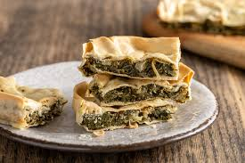

Erbazzone Recipe: A Traditional Savory Pie from Emilia-Romagna
Home Page
Introduction
Erbazzone is a delicious savory pie from Reggio Emilia, in the Emilia-Romagna region of Italy. This rustic dish is made with a thin, crispy pastry filled with a rich mixture of Swiss chard (or spinach), Parmesan, and pancetta. Traditionally prepared by farmers to use fresh greens from the garden, erbazzone is a flavorful and satisfying dish, perfect as an appetizer, snack, or light meal.

Ingredients
For the Dough:
- 250g (2 cups) all-purpose flour
- 50ml (¼ cup) olive oil or lard
- 100ml (½ cup) water
- ½ teaspoon salt
For the Filling:
- 500g (1 lb) Swiss chard (or spinach), washed and chopped
- 1 small onion, finely chopped
- 2 cloves garlic, minced
- 100g (3.5 oz) pancetta, diced (optional)
- 100g (1 cup) grated Parmesan cheese
- 2 tablespoons olive oil or lard
- Salt and black pepper to taste
For Topping (Optional):
- 1 tablespoon olive oil or melted lard
- A sprinkle of coarse salt
Step-by-Step Guide
Step 1: Prepare the Dough
- In a large bowl, mix the flour and salt.
- Add the olive oil (or lard) and water gradually, mixing until a smooth dough forms.
- Knead the dough for about 5 minutes, then cover with a cloth and let it rest for 30 minutes.
Step 2: Prepare the Filling
- Heat 1 tablespoon of olive oil in a pan over medium heat.
- Add the diced pancetta (if using) and cook until crispy.
- Add the chopped onion and garlic, sautéing until soft and fragrant.
- Add the Swiss chard (or spinach) and cook until wilted and most of the liquid has evaporated.
- Remove from heat and let cool slightly.
- Stir in the grated Parmesan, seasoning with salt and black pepper to taste.
Step 3: Assemble the Erbazzone
- Preheat the oven to 180°C (350°F).
- Divide the dough into two parts: one slightly larger for the base and one smaller for the top.
- Roll out the larger portion into a thin sheet and place it in a greased baking pan.
- Spread the filling evenly over the dough.
- Roll out the second piece of dough and place it over the filling, sealing the edges.
- Prick the top with a fork to allow steam to escape.
- Brush with olive oil or melted lard and sprinkle with coarse salt.
Step 4: Bake the Erbazzone
- Bake for 30-35 minutes until golden brown and crispy.
- Let it cool slightly before slicing and serving.
Serving Suggestions
Erbazzone is best enjoyed warm or at room temperature, served with a side of cured meats like Prosciutto di Parma or a fresh salad. It pairs wonderfully with Lambrusco, a sparkling red wine from Emilia-Romagna.